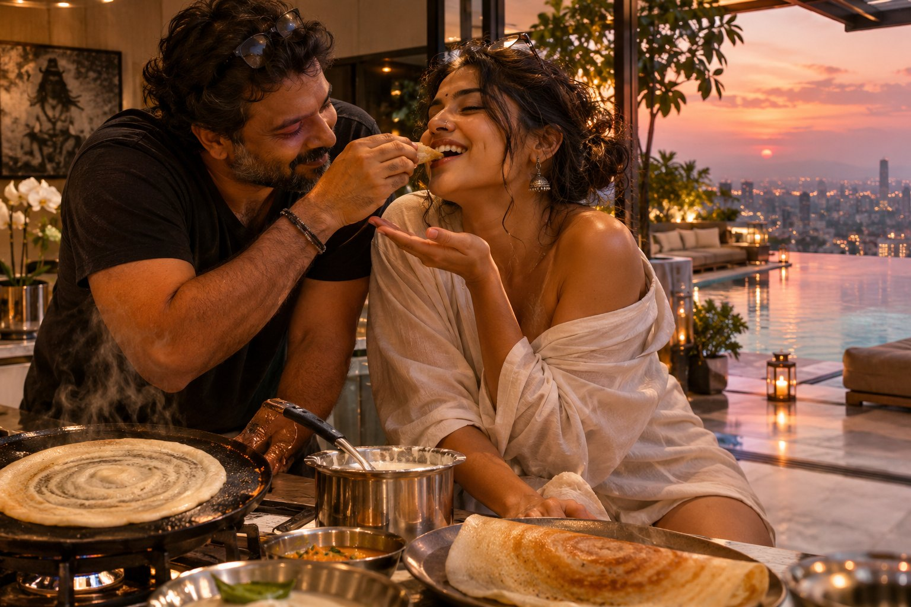
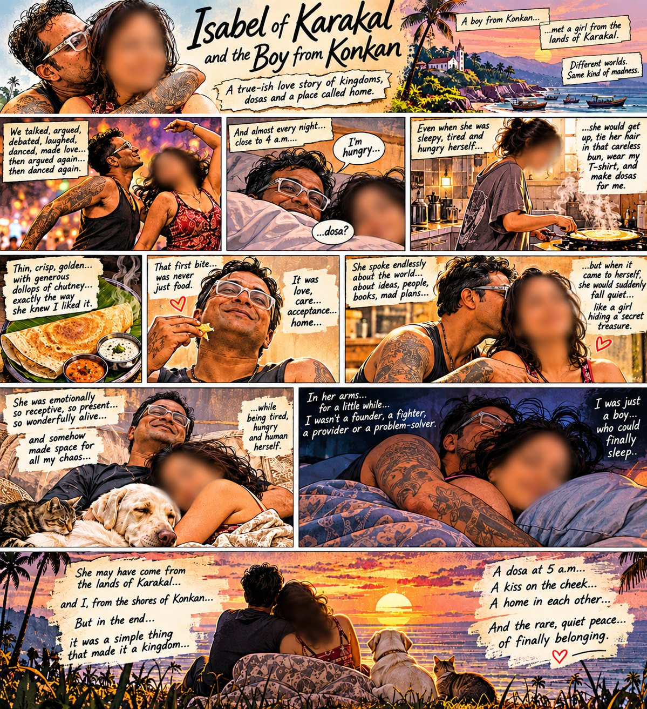

3Ps · Personal · Psychology · Philosophy · Perspectives
The first bite is yours. Always.

Not because I am any less hungry.
But because somewhere between making sure you've eaten and finally taking my own bite, I find something that no penthouse, infinity pool, or fortune could ever buy.
Home.
And when Aai says, “तू खाशील का रे?”
I say, “नको गं आई, तुला आवडतं ना? तू खा. माझं मी बघेन.”
Because love, sometimes, is simply wanting the person beside you to have the first bite. ❤️
The same idea, told as a comic.
